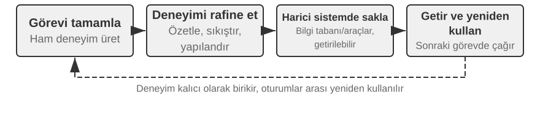
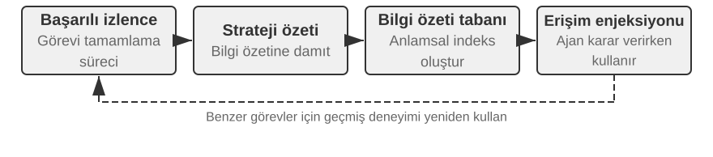
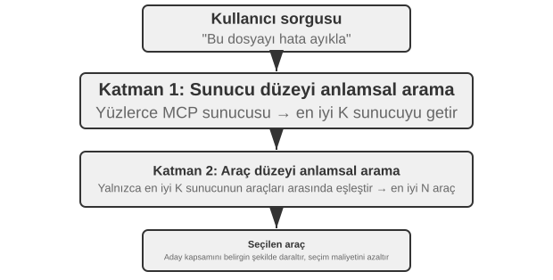
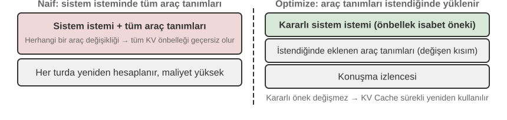
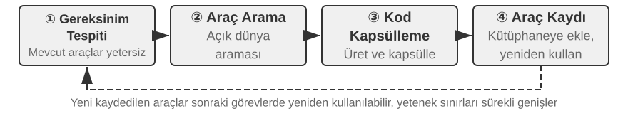

Agent'ın Sürekli Evrimi¶
Bugünün Agent'ları çarpıcı bir yetenek paradoksuyla karşı karşıya: daha önce hiç görmedikleri karmaşık görevleri zero-shot çözebiliyorlar, ama benzer görevleri on bin kez işledikten sonra ertesi gün hâlâ ilk gün yaptıkları hatayı yapabiliyorlar. Deneyimden otonom biçimde öğrenebilme, Agent'ın "görevi tamamlayabilme"den "güvenilir biçimde çalışabilme"ye geçişindeki kilit yetenek hâline geliyor; bu, aynı zamanda yeni nesil modellerin merkezî araştırma konusudur. Ne var ki modelin kendi sürekli öğrenme yeteneği bugün hâlâ fazlasıyla yetersiz.
Bunun nedeni, dağıtılmış bir modelin tek bir çıkarım yüzünden parametrelerini otomatik olarak değiştirmemesidir. Bölüm 2'de ele alınan In-Context Learning (bağlam içi öğrenme), durum yönetimi ve sıkıştırma, Agent'ın mevcut görev içinde uyum sağlamasını mümkün kılar; ama context sona erdikten sonra bu değişim bir sonraki göreve kendiliğinden taşınmaz. Konuşmaları belleğe kaydetmek de yeni bir davranışı öğrenmiş olmak anlamına gelmez: ham trajectory'ler çok uzun olabilir ve içlerinde etkili stratejilerin yanı sıra tesadüfi başarılar, hatalı nedensellik atıfları ve güvenilmez girdiler de bulunur.
Burada kolayca karıştırılan bir ayrım var: yaşananları saklamak, yaşananlardan öğrenmekle aynı şey değildir. Yüz trajectory'yi uzun bir context'e ya da bir vektör veritabanına koymak, modelin gerektiğinde bir vakayı geri bulmasına yardımcı olabilir, ama vakalar arası karşılaştırmayı kendiliğinden tamamlamaz: hangi adımlar başarılı trajectory'lerde tekrar tekrar ortaya çıkıyor, hangi uygulamalar yalnızca eski sürüm bir arayüzde işe yarıyor, belirli bir başarı doğru stratejiden mi yoksa ortamın tesadüfünden mi geliyor. Öğrenme, sistem "değerlendirme, karşılaştırma, genelleme, doğrulama" işini etkin biçimde tamamladıktan sonra gerçekleşir; log'un diske yazıldığı anda değil. Bölüm 3'teki kullanıcı belleği ağırlıklı olarak "kullanıcı ve dünya nasıldır"ı biriktirir; bu bölümdeki deneyim öğrenmesi ise bir adım öteye geçerek "hangi koşullarda nasıl davranılmalı"yı biriktirir. Birincisi Agent'ın daha çoğunu hatırlamasını sağlar, ikincisiyse onu zeki olmaktan çıkarıp usta hâline getirir.
Peki neden modelin her görevden sonra doğrudan kendini eğitmesine izin verilmiyor? Çünkü üretim ortamları nadiren temiz bir öğrenme sinyali sunar. Kullanıcının memnun olması kurallara uygunluk anlamına gelmez; testlerin geçmesi, başarısız test durumlarının silinmiş olmasından kaynaklanıyor olabilir. Tek bir yerel güncelleme bile yetenek unutmasına, strateji kaymasına veya güvenlik gerilemesine yol açabilir. Çalışmakta olan bir modelin doğrulanmamış geri bildirime dayanarak kendini doğrudan değiştirmesine izin verilirse, hatalı deneyimler ve prompt injection kalıcı hâle gelebilir ve sonraki görevlerde sürekli büyüyebilir. Temel modellerin periyodik eğitimi genel yetenekleri artırabilir, ama her Agent'ın her gün karşılaştığı özel kuralları, araç değişikliklerini ve yerel deneyimi zamanında özümseyemez.
Bu nedenle, modelin kendisi henüz güvenilir biçimde sürekli öğrenemiyorken, "öğrenme"nin önce modelin çevresinde otonom bir sistem olarak kurulması gerekir: çalışma kanıtlarını kaydetmek, sonuçları ve süreci doğrulamak, birden çok trajectory'den ortak örüntüleri çıkarmak, ardından bilginin mi, talimatların mı, programların mı yoksa model parametrelerinin mi güncelleneceğine karar vermek. Bütün değişiklikler önce birer aday sürüm hâline gelir; ancak regresyon testlerinden ve güvenlik denetimlerinden geçtikten sonra bir sonraki çalışma turunu değiştirebilir. Bu, modelin öğrenme yeteneğinin yerine geçen bir şey değildir; mevcut teknik koşullarda Agent'a sürekli öğrenme yeteneği kazandırmanın mühendislik yoludur.
Önceki bölümler bu sistemin ihtiyaç duyduğu başlıca parçaları zaten vermişti. Bölüm 2 görev içi durumu ele alır, Bölüm 3 bilgi altyapısını sağlar, Bölüm 5 Agent'a araç yaratma ve sistemi değiştirme meta-yeteneğini kazandırır, Bölüm 6 değerlendirme ile doğrulamayı kurar, Bölüm 7 model parametrelerinin nasıl güncelleneceğini anlatır. Bölüm 8'in görevi, bu parçaları Şekil 8-1'de gösterilen sürekli evrim döngüsü hâlinde örgütlemektir.

Sürekli evrim, izlenebilir çalışma deneyiminden doğmalı, sonraki davranışı değiştirebilmeli ve belirgin bir gerilemeye yol açmadığı doğrulanmış olmalıdır. Bu bölüm önce bir çalışmanın tam olarak neresinin iyi, neresinin yanlış olduğuna nasıl karar verileceğini tartışıyor; ardından dört güncelleme yöntemini ve bunların uygulanabilirlik sınırlarını karşılaştırıyor; son olarak bu güncellemelerin uzun vadeli çalışmada nasıl doğrulandığını, yayımlandığını, gözden geçirildiğini ve elendiğini ele alıyor.
Çalışma Trajectory'lerinden Öğrenme Sinyali Elde Etmek¶
Sürekli evrimin başlangıç noktası "özetleme" değil, "değerlendirme"dir. Sistem görevin tamamlanıp tamamlanmadığını bilmiyorsa ve hangi adımın başarıya ya da başarısızlığa yol açtığını da bilmiyorsa, dil modelinin ürettiği reflection ancak bir tahmin olabilir. Hatalı bir değerlendirme bir kez uzun vadeli bilgiye, system prompt'a veya eğitim verisine girdiğinde, etkisi sonraki görevler boyunca durmadan büyür.
Bazı görevlerin sonucunu doğrulamak görece kolaydır. Bir Kodlama Agent'ı testleri, tip kontrollerini ve performans benchmark'larını çalıştırabilir; kullanıcı adına iade işlemi yapan bir Agent sipariş durumunu ve gerçekleşen iade tutarını sorgulayabilir. Bu tür sinyaller ortamdaki gerçek durumdan gelir ve genellikle modelin kendi davranışına ilişkin anlatımından daha güvenilirdir. Ne var ki sonucun doğru olması sürecin de doğru olduğu anlamına gelmez. Başarısız test durumlarını silmek de testleri geçirir; kullanıcıya sözlü olarak "iadenizi 7 gün içinde yapacağız, lütfen sabırlı olun" demek de geçici bir memnuniyet geri bildirimi getirebilir. Bu yüzden güvenilir bir değerlendirme hem sonuca bakmalı hem de sonuca ulaşılan yolu denetlemelidir.
Görevlerin daha büyük bölümünün ise tek bir doğru cevabı yoktur. Müşteri hizmetlerinin sabırlı olup olmadığı, kurallara uygun sınırlar içinde bir çözüm sunup sunmadığı, bir araştırma raporunun kilit kanıtı yakalayıp yakalamadığı, üretilen metnin doğal ve derli toplu olup olmadığı — bunların hepsi bağlamla birlikte yargılanmayı gerektirir. Burada Bölüm 6'da tanıtılan LLM-as-a-Judge kullanılabilir, ama hakemden yalnızca muğlak bir toplam puan almak yetmez. Daha etkili yol, değerlendirme ölçeğini (Rubric) önceden tanımlamak; doğrulayıcıdan her maddeye ayrı ayrı puan vermesini, trajectory'den kanıt göstermesini ve kanıt yetersizken kararsızlığını açıkça belirtmesini istemektir.
Şekil 8-2 üç katmanlı bir doğrulama yapısı sunuyor. En alttaki sonuç doğrulayıcısı test sonuçlarını, veritabanı durumunu ve araç dönüşlerini okur ve "iş gerçekten yapıldı mı" sorusunu yanıtlar; ortadaki süreç doğrulayıcısı iş kurallarını, yetkileri ve eylem dizisini denetler ve "izin verilen biçimde mi yapıldı" sorusunu yanıtlar; üstteki kalite doğrulayıcısı Rubric'e dayanarak dili ve stratejiyi değerlendirir ve "uygun biçimde mi yapıldı" sorusunu yanıtlar. Bir metrik ne kadar alt katmandaysa o kadar çok koda ve ortamın gerçek durumuna dayanmalıdır; yalnızca biçimselleştirilmesi zor olan kısımlar dil modeline bırakılır.

Müşteri hizmetleri Agent'ını ele alalım: işe yarar bir Rubric en azından Tablo 8-1'deki boyutları kapsamalıdır. İlk beş madde ağırlıklı olarak asgari sınırları kısıtlar, son ikisi hizmet kalitesini ölçer. Böyle bir ayrıştırma, "kullanıcı memnun oldu mu" sorusundan daha yüksek tanısal değere sahiptir: kullanıcı, Agent kurala aykırı bir iade yaptığı için memnun olabileceği gibi, kurallara uygunluk kısıtı yüzünden memnuniyetsiz de olabilir; tek bir memnuniyet puanı bu ikisini ayırt edemez.
Tablo 8-1 Müşteri Hizmetleri Agent'ı için Trajectory Değerlendirme Boyutları
| Boyut | Doğrulama sorusu | Başlıca kanıt |
|---|---|---|
| Görev sonucu | Kullanıcının asıl talebi çözüldü mü | Nihai ortam durumu, araç sonuçları |
| Kural uyumu | Politika, yetki veya zorunlu süreç ihlal edildi mi | Politika kütüphanesi, eylem trajectory'si |
| Gizlilik sınırı | Verilmemesi gereken bilgi sızdırıldı mı | Yanıt metni, veri erişim kayıtları |
| Olgusal güvenilirlik | İfadeler bilgiyle veya araç sonuçlarıyla destekleniyor mu | Alıntılanan kaynaklar, araç dönüşleri |
| Söz—eylem tutarlılığı | Tamamlandığı söylenen işlem gerçekten yapıldı mı | Yanıtların araç log'larıyla karşılaştırılması |
| İfade kalitesi | Dil doğal ve derli toplu mu, tekrar ve şablonlaşmadan kaçınılmış mı | Konuşmanın tamamı, dil Rubric'i |
| Kurallara uygun alternatif | Asıl çözüm uygulanamazken izin verilen bir alternatif yol bulundu mu | Kullanıcı hedefi, politikalar ve sonraki eylemler |
Bunların içinde "söz—eylem tutarlılığı" özellikle Agent senaryolarına uygundur. Geleneksel metin değerlendirmesi yalnızca son yanıtı okur ve "iadenizi sizin için gönderdim" cümlesini kolaylıkla iyi hizmet sayar; trajectory değerlendirmesi ise iade aracının gerçekten çağrılıp çağrılmadığını, çağrının başarılı olup olmadığını ve sipariş durumunun değişip değişmediğini de denetlemeyi sürdürür. "Kurallara uygun alternatif" de modeli kuralları keyfî biçimde aşmaya teşvik etmez; ondan kullanıcının gerçek hedefini anlamasını ve iade mümkün olmadığında bilet değişikliği, erteleme veya kısmi telafi gibi meşru seçenekleri incelemesini ister.
Doğrulama sonucu tek bir skalere sıkıştırılmamalıdır. Bir trajectory değerlendirmesi daha çok yapılandırılmış bir tanıya benzer: görev kısmen başarılı, kural uyumu geçti, ama bir yerde kanıtsız bir ifade, bir yerde asılsız bir söz var; üstelik yanıt politikayı üç kez tekrar tekrar açıklamış. Boyutlandırılmış sinyaller hem sorunun niteliğini hem de kanıtın konumunu korur. Ancak bundan sonra alt modüller şu ayrımı yapabilir: kanıtsız ifade bilgi eksikliğinden mi, alıntı zorunluluğunun bulunmamasından mı, yoksa modelin yetersizliğinden mi kaynaklanıyor; asılsız söz için prompt mu değiştirilmeli, yoksa Harness'e yanıt ile araç durumu arasında bir tutarlılık kontrolü mü eklenmeli.
LLM doğrulayıcısının kendisi de kalibrasyon gerektirir. Üretim sistemleri genellikle uzmanlarca etiketlenmiş küçük bir trajectory kümesi hazırlar ve doğrulayıcının her boyuttaki tutarlılığını denetler; yüksek riskli veya düşük güvenli vakalar ikinci bir modele ya da insan incelemesine gider; model sürümü değiştikten sonra kalibrasyon kümesi yeniden çalıştırılır. Doğrulayıcı, değerlendirmeyi ve kanıtı üretmekle yükümlüdür; Agent'ın hangi parçasının değiştirileceğine ise bağımsız bir tanı ve evrim modülü karar vermelidir. Böylece aynı modelin hem hakem olması hem de kuralları doğrudan yeniden yazması önlenir.
Deney 8-1 ★★: Müşteri Hizmetleri Agent'ı için Trajectory Doğrulayıcısı İnşa Etmek
Deney Amacı: Bir müşteri hizmetleri çalışma trajectory'sini sonraki öğrenmede kullanılabilecek yapılandırılmış bir tanıya dönüştürmek ve "kanıtla birlikte çok boyutlu sonuç"un tek bir toplam puandan daha iyi kök neden bulup bulmadığını doğrulamak.
Veri ve Akış: Deney; normal iade, asılsız söz, gizlilik ihlali ve aşırı reddetme olmak üzere dört sınıfta uzman etiketli trajectory'ler hazırlar. Birinci katman siparişin nihai durumunu ve araç log'larını okuyarak iadenin ya da bilet değişikliğinin gerçekten olup olmadığını belirler; ikinci katman adım adım iş politikalarıyla karşılaştırarak yetkileri, zorunlu süreçleri, gizliliği, olgusal dayanağı ve söz—eylem tutarlılığını denetler; üçüncü katman Tablo 8-1'deki Rubric'e göre ifade kalitesini ve kurallara uygun alternatifi değerlendirir ve başarısızlık sonuçları için kanıt turlarını saklar. Varsayılan kalite Judge'ı deterministik kurallar kullanır, ayrıca gerçek bir LLM Judge de sunulur; üst katman hangi modeli kullanırsa kullansın, sonuç katmanı ile kural katmanı bir dil modelinin tahminine bırakılmaz.
Karşılaştırma ve Metrikler: Baseline yalnızca tek bir toplam puan verir; deney grubu her boyut için
pass,failveyauncertaindeğerini, kanıtı ve güven düzeyini üretir. Kalibrasyon aşamasında boyut bazında başarısızlık tespitinin kesinliği (precision) ve duyarlılığı (recall) hesaplanır ve uzman etiketleriyle tam örtüşme oranı raporlanır; ayrıca asılsız söz gibi başarısızlıkların yalnızca bir sonuçtan ibaret kalmayıp boş olmayan kanıt içerdiği kontrol edilir.Kabul Kriterleri: Doğrulayıcı kritik ihlalleri, asılsız sözleri ve aşırı reddetmeleri kararlı biçimde tespit etmelidir; yüksek bir toplam puan, gizlilik veya kural boyutundaki bir başarısızlığı örtemez; düşük güvenli ve yüksek riskli vakalar otomatik olarak öğrenme sinyaline dönüşmek yerine ikinci bir doğrulayıcıya veya insan incelemesine gitmelidir.
Eşlik eden uygulama için bkz.
trajectory-verifier; varsayılan olarak çevrimdışı yeniden üretilebilen kalite Judge'ı kullanılır,--judge llmile hâlihazırda uygulanmış gerçek LLM doğrulayıcısı çalıştırılabilir.
Agent'ın Sürekli Evrimi için Dört Yöntem¶
Öğrenme sinyali, Agent'ın değişmesi gerektiğini söyler; ama değişimin nerede gerçekleşmesi gerektiğini söylemez. Güncelleme biçimini seçerken birincil ölçüt, deneyimin ne kadar süredir var olduğu değil, hedeflenen yeteneğin belirli bir taşıyıcıyla doğal biçimde ifade edilip edilemeyeceğidir. Olgular ve deneyimler bilgi dokümanına yazılmaya uygundur; dille açıkça anlatılabilen stratejiler prompt'a veya Skill'e yazılmaya uygundur; kesin biçimde yürütülebilen süreçler ve kısıtlar programa yazılmaya uygundur; algı, dil üslubu ve örtük stratejiler gibi yüksek boyutlu yetenekler ise model parametrelerine girmek zorundadır. Şekil 8-3 bu dört yolu ve aralarındaki ilişkiyi gösteriyor.

Tablo 8-2 derli toplu bir karşılaştırma sunuyor. Dört yol birbirini dışlamaz: tıbbi görüntüleme Agent'ı lezyonları tanımak için parametrelere dayanır, güncel kılavuzları bilgi tabanından alır, risk göstergelerini kodla hesaplar; müşteri hizmetleri modelinin doğal ses tonu post-training'den gelir, kuruma özgü politikalar bilgi ve Skill tarafından sağlanır, kritik uyumluluk kuralları ise sunucu tarafındaki kodla güvence altına alınır.
Tablo 8-2 Dört Sürekli Evrim Biçiminin Uygulanabilirlik Sınırları
| Güncelleme biçimi | Taşımaya uygun içerik | Başlıca üstünlükler | Başlıca sınırlamalar |
|---|---|---|---|
| Deneyim bilgi tabanı | Olgular, deneyime dayalı örüntüler, istisnalar ve kaynaklar | Hızlı güncellenir, izlenebilir, ihtiyaca göre retrieval yapılabilir | Retrieval'a ve modelin doğru uygulamasına bağımlı |
| Prompt ve Skill | Dille ifade edilebilen yargı ilkeleri ve işleyiş kuralları | Yorumlanabilir, etki alanı denetlenebilir | Kolayca şişer, çelişir veya göz ardı edilir |
| Program ve Harness | Deterministik süreçler, araçlar ve katı kısıtlar | Test edilebilir, yürütmesi kararlı, maliyeti düşük | Geliştirme ve bakım maliyeti görece yüksek |
| Model parametreleri | Yüksek boyutlu algı, üretim üslubu ve örtük stratejiler | Genelleme gücü yüksek, çıkarım maliyeti düşük | Güncelleme ve regresyon maliyeti yüksek |
Deneyimi Bilgi Olarak Biriktirmek¶
En hafif evrim biçimi, birden çok çalışmada tekrar tekrar ortaya çıkan deneyimi retrieval yapılabilir bilgi dokümanlarına dönüştürmektir. Burada söz edilen "deneyim bilgi tabanı", depolama, indeksleme ve retrieval teknolojilerini Bölüm 3 ile paylaşır; ama bilginin kaynağı ve doğrulama hedefi farklıdır. Bölüm 3 ağırlıklı olarak kullanıcı konuşmalarından, dokümanlardan ve veri kümelerinden "kullanıcı ve dünya nasıldır"ı çıkarır; bu bölüm ise Agent'ın eylem trajectory'lerinden ve sonuçlarından "hangi koşullarda ne yapılmalı"yı çıkarır. Örneğin "bu havayolu özel yemeklerin yirmi dört saat önceden ısmarlanmasını şart koşuyor" alan bilgisidir; "bilet almadan önce özel yemek son başvuru zamanını kontrol et; yoksa ödemeyi yaptıktan sonra talebin karşılanamayacağını fark edersin" ise eylem deneyimidir.
Ham trajectory resmî bir bilgi birimi olmaya uygun değildir. Hem uzundur hem de gürültülüdür; araçların ham çıktısını, tesadüfi sapmaları ve ortam ayrıntılarını içerir. Daha sağlam bir sistem üç katman veri saklar: denetim için değişmez ham trajectory'ler; tek bir çalışmanın başarısını, başarısızlığını ve aday derslerini kaydeden çalışma analizleri; ve aynı türden birden çok trajectory'nin karşılaştırılıp kümelenmesi ve genellenmesiyle oluşan, geleceğe dönük Markdown bilgi dokümanları. Resmî bir doküman genellikle uygulanabilir senaryoyu, önerilen stratejiyi, yasaklanan uygulamaları, istisna koşullarını, kanıt kaynaklarını ve en son doğrulama zamanını açıkça yazar; tek bir görevin tüm sürecini yeniden anlatmaz.
Bu tasarım, Bölüm 3'teki User-as-Code ile aynı iki aşamalı düşünceyi taşır. User-as-Code önce konuşmadaki olguları değişmez bir log'a ekler, sonra yapılandırılmış kullanıcı modelini periyodik olarak yeniden kurar; deneyim öğrenmesi de aynı şekilde önce kanıtı saklamalı, sonra çevrimdışı olarak değiştirilebilir bilgiyi üretmelidir. Şekil 8-4 bu süreci gösteriyor. Kaydetmeyi düzenlemekten ayırmak, tek bir tesadüfi başarının ya da bir ağ arızasının Agent'ı anında değiştirmesini önler; ayrıca sisteme, birden çok başarı ve başarısızlığı gördükten sonra ortak yanı belirleme imkânı verir.

Deneyim dokümanı basit bir trajectory özeti değildir. Gerçekten aktarım değeri taşıyan içerik karşılaştırmadan doğar: aynı türden başarılı trajectory'ler ne yapmış, başarısız trajectory'lerde ne eksik; belirli bir strateji hangi ortam sürümlerinde işe yaramış, hangi ön koşullar altında çökmüş. Bölüm 3 bilgi çıkarımını, kümelemeyi ve retrieval'ı zaten tanıttığı için bu bölüm o algoritmaları yinelemiyor; bunun yerine trajectory değerlendirmesinin çıkarım koşuluna nasıl dönüştüğüne ve çıkarılan bilginin sonraki görevlerdeki başarımı artırıp artırmadığına odaklanıyor.
Eksiksiz bir bilgi damıtma boru hattı beş adıma ayrılabilir. Önce değişmez trajectory'ler ve ortam sonuçları saklanır; sonra tek bir çalışma için görev türünü, gereken yetenekleri, gözlenen stratejileri, hataları ve istisnaları sıralayan yapılandırılmış bir analiz üretilir; ardından aynı türden çalışmalar görev ailesine göre bir araya toplanır ve her aday örüntü için "hangi trajectory'ler destekliyor, hangileri çürütüyor" biçiminde bir kanıt tablosu kurulur; yalnızca destek eşiğine ulaşan adaylar resmî dokümana yazılır; son olarak damıtmaya katılmamış yeni görevler üzerinde aktarım etkisi sınanır. Resmî bilginin aday analizlerden ayrı depoda tutulması, sistemin ham kanıtı bozmadan yeniden genelleme yapmasına ve ortam sürümü değiştiğinde belirli bir sonucu tam olarak geri almasına imkân verir.
GAIA deneyim öğrenmesi bunun sezgisel bir örneğini veriyor. GAIA2, arama, web sayfası okuma, dosya işleme ve hesaplamayı bir arada gerektiren çok adımlı sorular içerir; AWorld3 ise Agent'ı çalıştıran, bu araçları çağıran ve trajectory'leri saklayan yürütme ortamını sağlar. Birincisi sınav kâğıdı gibiyse ikincisi sınav salonu ve deney kayıt sistemidir. Eski usul yaklaşım, bir görev başarıyla tamamlanır tamamlanmaz strateji özeti üretip bunu vektörleştirerek depoya yazmaktı; daha titiz bir uygulama ise önce GAIA cevap doğrulamasını veya başka bir ortam doğrulayıcısını kullanarak çalışmaları başarılı, kısmen başarılı ve başarısız olarak etiketler, ardından aynı görev ailesindeki birden çok yolu karşılaştırır. Başarılı trajectory'ler aday stratejilere katkı verir, başarısız trajectory'ler dışlayıcı bilgiye katkı verir, kısmen başarılı trajectory'ler ise "hangi bölüm işe yaradı, hangi bölümde hâlâ sorun var" ayrımını yapmaya yardımcı olur. Reflexion'ın1 önerdiği doğal dil reflection'ı aday derslerin üretilmesine katılabilir, ama reflection'ın kendisi kanıt değildir; yalnızca ortam sonucuyla örtüşen, trajectory'ler arasında destek bulan ve yeni görevlerde olumlu aktarım gösteren içerik resmî deneyim dokümanına girmelidir.
Deney 8-2 ★★: GAIA Trajectory'lerinden Deneyim Bilgi Dokümanı Damıtmak
Deney Amacı: "Trajectory'ler arası bilgi dokümanı"nın "tek bir başarının özetini hatırlamak"tan daha kolay aktarılıp aktarılmadığını sınamak ve tesadüfi başarıların ve hatalı deneyimin yol açtığı negatif aktarımı azaltmak.
Veri ve Akış:
gaia-experienceönce her çalışmanın eksiksiz trajectory'sini ve dışarıdan gelenenvironment_scoredeğerini saklar, sonra bunları asgari öğrenme kayıtlarına dönüştürür:task_family, gerekencapabilities,applies_when, gözlenen stratejiler, hatalar, istisnalar ve kaynak trajectory kimlikleri. Sonuç doğrulayıcısı çalışmaları başarılı, kısmen başarılı ve başarısız olarak ayırır; öğrenme modülü aynı görev ailesi içinde yolları karşılaştırır. LLM aday genellemeler önerebilir, ama önerilen bir stratejinin en az iki başarısız olmayan trajectory tarafından desteklenmesi gerekir. Sonuçta üretilen Markdown dokümanı uygulanabilir senaryoyu, önerilen stratejileri, sık yapılan hataları, istisna koşullarını, kaynağı ve en son doğrulama zamanını içerir. Uygulama aşamasında yalnızca bu dokümanlar retrieval ile getirilir; uzun ham trajectory'ler doğrudan context'e tıkıştırılmaz.Üç Karşılaştırma Grubu: Birinci grup geçmiş deneyimi hiç kullanmaz; ikinci grup mevcut göreve en çok benzeyen tek bir trajectory özetini getirir; üçüncü grup birden çok trajectory tarafından ortaklaşa desteklenen bilgi dokümanını getirir. Öğrenme kümesi ile aktarım kümesi kesinlikle örtüşmemelidir; aksi hâlde aynı GAIA sorusunun cevabı "deneyim" adı altında değerlendirmeye sızar.
Metrikler ve Kabul: Aktarım görevlerindeki başarı oranı, ortalama getirilen karakter veya Token sayısı ve negatif aktarım oranı birlikte raporlanır; ayrıca her resmî sonucun kaynak trajectory'leri listeleyip listelemediği denetlenir. Trajectory'ler arası doküman yalnızca context'i kısaltıyor ama yeni görevlerdeki başarımı yükseltmiyorsa, sistemin deneyimi öğrendiği kanıtlanmış olmaz; tek bir tesadüfi başarı resmî bilgiye terfi edebiliyorsa ya da doküman ham trajectory'ye kadar izlenemiyorsa da kabul geçilmez.
Eşlik eden uygulama için bkz.
gaia-experience.demo_documents.pyvarsayılan olarak çevrimdışı çalışır;--extractor llmile trajectory'ler arası deneyim adaylarını gerçek bir LLM önerebilir.
Deneyimi Talimat Olarak Yazmak¶
Deneyim bilgi tabanı Agent'a başvuru malzemesi sunar; Prompt ve Skill ise çok daha buyurgan bir nitelik taşır. Birden çok trajectory aynı strateji hatasını tekrar tekrar ortaya çıkarıyorsa ve örüntü doğal dille açıkça anlatılabiliyorsa, sistem bunu "başvurulabilir deneyim" düzeyinden "uyulması gereken kural" düzeyine yükseltebilir. Neredeyse bütün görevlerde geçerli olan kurallar system prompt'a girmeye uygundur; yalnızca belirli bir alanda, projede veya araçta geçerli olan karmaşık süreçler ise ihtiyaç hâlinde yüklenen bir Skill ya da proje talimat dosyası olarak yazılmaya daha uygundur.
Prompt öğrenmesinin işbölümü, Bölüm 2'deki prompt engineering'den farklıdır. Bölüm 2, yapısı net ve önbellek dostu bir prompt'un nasıl yazılacağını yanıtlar; burada ise hangi üretim geri bildiriminin prompt değişikliğini tetiklemeye yettiği ve yeni bir kuralın dağıtımdan önce nasıl doğrulanacağı yanıtlanır. Değişiklik, system prompt'un tamamının tekrar tekrar yeniden yazılması biçiminde de olmamalıdır. Daha güvenilir yol, aynı türden bir başarısızlık kümesine dayanarak asgari bir diff üretmek, kuralın etki alanını belirtmek, mevcut kurallarla çelişip çelişmediğini denetlemek ve ardından hem başarısızlığı tetikleyen sınır vakalarında hem de eski görevlerden oluşan saklı kümede aynı anda değerlendirmektir.
Andrej Karpathy, 2025 yılında yazdığı uzun bir gönderide bu olası yeni paradigmayı geçici olarak System Prompt Learning (sistem prompt'u öğrenmesi) diye adlandırdı7. Özeti şuydu: pre-training ağırlıklı olarak bilgi öğrenir, fine-tuning ağırlıklı olarak alışkanlık hâline gelmiş davranışı biçimlendirir; ama insanda bir öğrenme biçimi daha vardır — bir sorunla karşılaşıp yöntemi çözdükten sonra, gelecekteki kendine açık bir dille "bir dahaki sefere bu tür bir sorunla karşılaşırsan önce şu yolu dene" notunu bırakmak. Böyle bir not defteri olmayan LLM'i Memento filminin başkarakterine benzetiyor ve şunu belirtiyor: System Prompt Learning ile pekiştirmeli öğrenmenin ikisi de davranışı deneyimden yola çıkarak iyileştirir, ama güncelleme algoritmaları farklıdır — birincisi metni düzenler, ikincisi gradyan inişiyle parametreleri değiştirir. Verdiği örnek, o dönemde Claude'un yaklaşık 17.000 kelimelik system prompt'unda yer alan özel bir talimattı: kelime, harf veya karakter sayma sorularıyla karşılaşıldığında önce tek tek numaralandır ve açıkça say, cevabı ondan sonra ver. Bu talimat tam olarak "strawberry kelimesinde kaç tane r var" türünden soruları ele almak içindi.
Agent sistemine indirgendiğinde bu, başarısızlıktan sonra dille ifade edilebilen dersleri, gelecekteki çalışmaların doğrudan okuyabileceği aday kurallara dönüştürmek demektir. Yalnızca "başarılı/başarısız" biçimindeki skaler bir sonuçla karşılaştırıldığında, kanıtlı bir tanı hatanın kimlik doğrulamada mı, araç seçiminde mi, yoksa insana devretme sınırında mı olduğunu gösterebilir ve böylece çok daha isabetli bir aday değişiklik üretilebilir. Karpathy'nin "bilgiyle yönlendirilen bir gözden geçirme, skaler ödüle kıyasla daha yüksek boyutlu bir geri bildirim kanalı sunar" sözü, bu yöntemin neden yüksek veri verimliliği taşıyabileceğini açıklıyor. Ne var ki bilginin daha zengin olması onun kendiliğinden doğru olduğu anlamına gelmez; aynı kullanıcı görüşü yalnızca tek bir müşteri ya da eski sürüm bir politika için geçerli olabilir. Dolayısıyla kümeleme, etki alanı değerlendirmesi ve regresyon testi yine de gereklidir.
Prompt'un otomatik optimizasyonunda birkaç farklı yol izlenmiştir. DSPy4, birden çok dil modeli çağrısından oluşan bir programı optimize edilebilir bir nesne olarak görür ve geliştirme kümesi üzerinde talimatları ve örnekleri arar; OPRO5, dil modelinin geçmiş prompt'lara ve bunların puanlarına bakarak yeni adaylar önermesini sağlar; GEPA6 ise başarısız trajectory'ler üzerindeki doğal dil reflection'ından yararlanarak birbirini tamamlayan aday prompt'lar üretir ve eler. Bunlar ağırlıklı olarak çevrimdışı değerlendirme kümeleri üzerinde toplu optimizasyona yöneliktir; üretim sistemlerindeki asgari diff ise daha çok sürekli bakıma benzer — yeni ortaya çıkan sınır vakalarıyla tetiklenir; kaynağı, denetlenebilirliği ve hızlı geri almayı öne çıkarır. Pratikte önce çevrimdışı aramayla iyi bir başlangıç sürümü bulunabilir, sonra yayına alınmış sistemin uzun kuyruklu kuralları vaka bazlı yamalarla sürdürülebilir.
Örneğin havayolu müşteri hizmetleri Agent'ı, kullanıcı politikayı sorguladığında çoğu kez fazla erken insana devrediyor olabilir. Trajectory değerlendirmesi kural ihlali olmadığını, ama kurallara uygun bir alternatifin de üretilmediğini gösterir. Aday yama; Agent'tan önce politikayı açıklamasını, kullanıcının gerçek hedefini belirlemesini ve izin verilen alternatifleri aramasını, yalnızca kullanıcı açıkça istediğinde veya konu gerçekten yetkisini aştığında devretmesini isteyebilir. Yeni kural aşırı devretmeyi azaltıyor, ama insana devredilmesi gereken güvenlik olaylarının Agent tarafından işlenmeyi sürdürmesine yol açıyorsa, regresyondan geçmemiş demektir. System Prompt Learning'in değeri otomatik olarak daha fazla metin eklemekte değil, üretimden gelen sınır vakalarıyla kuralların uygulanma kapsamını sürekli netleştirmektedir.
Skill öğrenmesi aynı ilkeyi izler, ama etki alanı daha yereldir. Skill'i, ihtiyaç duyuldukça açılan bir görev el kitabı gibi düşünebilirsiniz: birden çok deneyim bir araya gelip eksiksiz bir sigorta hasar süreci oluşturuyorsa, sistem buna karşılık gelen Skill'i üretebilir veya gözden geçirebilir. Aday Skill yalnızca bir konuşmanın özeti olmamalı; en azından ne zaman yükleneceğini, ön koşullarını, işlem adımlarını, bilinen tuzakları ve doğrulama yöntemini açıklamalı ve kaynak trajectory'leri saklamalıdır. Sistem önce mevcut Skill kütüphanesinde benzer yetenekleri arar: aynı süreç zaten varsa öncelikle yerel bir patch uygular, yalnızca gerçekten yeni ve bağımsız bir yetenek ortaya çıktığında yeni bir dizin oluşturur. Böylece kütüphanenin adları farklı ama içerikleri birbirine benzeyen el kitaplarıyla dolması önlenir. Anthropic'in Skill Creator'ı8 "taslak — test — değerlendirme — revizyon" üretim döngüsünü gösteriyor; bu, Skill'in nasıl üretilip iyileştirileceği sorusunu çözer. Asıl zor olan ise hangi çalışma kanıtlarının üretimi tetiklemeye yettiği, çatışmaların nasıl ele alınacağı ve değişikliğin alan görevlerinden ve eski görev regresyonundan geçip geçmediğidir.
Deney 8-3 ★★: Başarısız Trajectory'lere Dayanarak System Prompt'u İyileştirmek
Deney Amacı: Havayolu müşteri hizmetleri Agent'ının "kullanıcı politikayı sorguladığında fazla erken insana devretme" başarısızlık trajectory'lerinden öğrenmesini sağlamak ve aynı zamanda yeni kuralın gerçekten devretme gerektiren eski senaryoları bozmadığını kanıtlamak.
Akış: Önce eski görevlerden oluşan saklı küme ile aşırı devretme sınır kümesi ayrı ayrı çalıştırılır;
learning_signal.pybaşarısızlığı kural uyumu, görev çözümü ve kurallara uygun alternatif olmak üzere üç boyuta ayırır ve kaynak vaka kimliklerini saklar. Ardından Kodlama Agent'ı mevcut Prompt'u okur ve denetlenebilir tek bir asgariold_str → new_strdüzenlemesi üretir: Agent'tan önce politikayı açıklaması, gerçek hedefi belirlemesi ve kurallara uygun alternatifler bulması istenir; kullanıcının açıkça insan talep ettiği ya da bir güvenlik olayının ortaya çıktığı durumlar için devretme yolu korunur. Yama; kaynağı, hedef kuralı ve değişiklik gerekçesiyle birlikte aday manifest'e yazılır.Üç Karşılaştırma Grubu: Başlangıç Prompt'u, otomatik üretilen aday Prompt ve insan eliyle tek seferde ayarlanmış Prompt. Üçü de aynı modeli ve aynı saklı/sınır görev kümesini kullanır;
--quickyalnızca vaka sayısını azaltır, görev Agent'ını, LLM Judge'ı ve Kodlama Agent'ını yine gerçekten çağırır, dolayısıyla çevrimdışı bir benzetim sonucu sayılamaz.Yayım Eşiği ve Metrikler: Aday dört koşulu birden sağlamalıdır: yama boş olmamalı, kaynağı izlenebilmeli, sınır kümesindeki başarım gerçekten iyileşmeli ve saklı kümede gerileme olmamalı. Sınır görevlerindeki doğruluk, saklı görevlerdeki doğruluk, Prompt'un uzama miktarı, ortaya çıkan regresyon sayısı ve başarısızlığın fark edilmesinden adayın üretilmesine kadar geçen süre karşılaştırılır. Eşiği geçmek yalnızca
release_to_canarysonucunu verir, kararlı Prompt'un üzerine doğrudan yazılmaz; koşullardan herhangi biri sağlanmazsareject_candidatedöndürülmelidir.Eşlik eden uygulama için bkz.
prompt-auto-optimization. Çevrimdışı testler tanıyı ve yayım eşiğini kapsar;--quickise görev Agent'ını, LLM Judge'ı ve Kodlama Agent'ını gerçekten çağırır.
Deneyimi Program Olarak Yazmak¶
Deneyim; kararlı, tekrarlanan ve doğrulanabilir işlemleri tarif ediyorsa, modele her seferinde dokümanı yeniden okutup akıl yürüttürmek ekonomik değildir. Böyle durumlarda daha uygun yol, deneyimi bir iş akışına, araca veya Harness koduna derlemek ve tek seferlik bir keşfi tekrar tekrar yürütülebilir bir programa dönüştürmektir. Bölüm 5, Kodlama Agent'ının dosyaları nasıl okuyup yazdığını, testleri nasıl çalıştırdığını ve sistemleri nasıl ürettiğini zaten anlatmıştı; bu kısmın ilgilendiği şey genel kod üretimi değil, Agent'ın kendi trajectory'lerine dayanarak kendisinin gelecekteki sürümünü nasıl değiştirdiğidir.
Değiştirilebilecek nesneler yeni araçlardan ibaret değildir. İşlem katmanında tarayıcı trajectory'leri parametreli iş akışlarına derlenebilir ya da değişen API'ler için adaptörler üretilebilir; kontrol katmanında araç yönlendirme, yeniden deneme, circuit breaker ve context sıkıştırma stratejileri değiştirilebilir; doğrulama katmanında üretimdeki başarısızlıklara dayanarak yeni parametre kontrolleri, durum doğrulayıcıları ve regresyon testleri eklenebilir; mimari katmanda ise bir Reviewer Agent eklenerek planlama ile yürütme arasındaki bilgi akışı değiştirilebilir.
Tarayıcı iş akışları, programlaşmış deneyimin değerini iyi gösteriyor. Bunu bir hesap tablosunda makro kaydetmeye benzetebiliriz: ilk e-postayı gönderirken çok modlu Agent, "yaz, alıcı, konu, gövde, gönder" denetimlerini gözlem—düşünme—eylem döngüsüyle bulur; sonraki e-postalarda süreç hiç değişmez, yalnızca alıcı ve içerik farklıdır, dolayısıyla tüm yolu piksellerden ve DOM'dan yeniden keşfetmek için modeli bir kez daha çağırmaya gerek yoktur. Sistemin yapması gereken, ilk keşfin ürettiği trajectory'yi parametreleri, durum kontrolleri ve sürüm bilgisi olan küçük bir programa derlemektir.
Şekil 8-4'te gösterilen bilgi damıtma süreci, tarayıcı senaryosunda daha somut bir yaşam döngüsüne karşılık gelir:
- Trajectory'yi yakala: Gezinme, tıklama, metin girme, açılır liste seçimi gibi eylemleri kaydet; eylem parametrelerini, o andaki URL'yi ve XPath, CSS,
id,role,aria-label,data-testidgibi öğe konumlandırma kanıtlarını sakla. Konumlandırma bilgisi yalnızca öğeyi yeniden bulmaya yarar, görevin tamamlandığını kanıtlamaz. - Parametrele: İlk çalışmadaki sabit değerleri şablon değişkeni olarak tanı; örneğin
test@example.comadresini, e-posta konusunu ve gövdesini{recipient},{subject}ve{content}ile değiştir; geri kalan kararlı eylemler olduğu gibi kalsın. Öğretim amaçlı uygulama düzenli ifade ve şablon değiştirme kullanır; üretim sistemleri yapılandırılmış görev girdisi ya da kısıtlanmış bir çıkarım modeli kullanabilir. - Durum kontrollerini tanımla: Eylemlere yürütme öncesi ve yürütme sonrası kontroller ekle; örneğin "gönder düğmesi şu anda görünür", "gezinmeden sonraki URL hedef siteye ait". Tüm iş akışı için de bir nihai durum kontrolü ekle; örneğin "gönderilmiş listesinde yeni bir e-posta belirdi" ya da test sayfasının durum değeri beklenen biçimde değişti. Eylemin başarıyla yürütülmesi ile görevin başarılı olması iki ayrı şeydir; nihai durum kontrolü gerçek sayfayı veya arka uç durumunu okumak zorundadır.
- Adayı doğrula: İlk başarı yalnızca bir
candidateüretir. Sistem, sandbox hesabını veya test sitesini bağımsız bir başlangıç durumuna sıfırlamalı, sonra adayı baştan sona yeniden oynatmalıdır; her adımın yürütme öncesi kontrolü, yürütme sonrası kontrolü ve nihai durum kontrolü tümüyle geçtikten sonravalidatedolarak yayımlanabilir. E-posta gönderme, sipariş verme gibi yan etkisi olan görevlerde güvenli bir sıfırlama geri çağrısı yoksa, aday yalnızca denetim amacıyla saklanabilir; doğrulama uğruna üretim hesabında yeniden yürütülemez. - Eşleştir ve yeniden oynat: Yeni bir görev geldiğinde önce resmî yetenek kütüphanesinde niyete ve anahtar kelimelere göre bir iş akışı ara, bu seferki parametreleri çıkar, sonra doğrudan Playwright ile yürüt. Yeniden oynatma yolu LLM'i adım adım çağırmayı gerektirmez, ama yine de öğelerin kullanılabilir hâle gelmesini beklemeli ve bütün durum kontrollerini tamamlamalıdır.
- Geçersiz kıl ve yeniden öğren: Hedef öğe bulunamadığında, durum kontrolü geçmediğinde, API Schema değiştiğinde veya nihai durum yanlış olduğunda sonraki eylemleri hemen durdur, eski sürümü retrieval yapılabilir kütüphaneden
invalidbölgesine taşı ve yeniden keşif için tam Agent'a geri dön. Eski dosya denetim ve karşılaştırma için saklanır, ama sessizce eşleşmeyi sürdüremez.
E-posta göndermeyi ele alalım: derlemenin sonucu yalnızca "şu düğmelere sırayla tıkla" değildir; alıcı, konu ve gövde parametreleri olan küçük bir programdır. Göndermeden önce yazma penceresini ve giriş alanlarını kontrol eder, gönderdikten sonra başarı bildirimini kontrol eder, en sonunda gönderilmiş listesinde ilgili e-postanın belirdiğini doğrular. PreAct'ın9 deneylerinde bu tür programlar tekrarlanan görevlerde uçtan uca 8,5–13 kat hızlanma sağladı ve yeniden oynatma aşamasında dil modelinin adım adım çağrılmasına gerek kalmadı. Daha da önemli sonuç şudur: süreç belleği aynı anda eylem öncesi doğrulama, eylem sonrası doğrulama ve saklamadan önce bağımsız doğrulama içermek zorundadır. Aksi hâlde sistem kolayca tehlikeli bir yanılsamaya kapılır: yeniden oynatma kapsamı yüzde 100'dür, her düğmeye tıklanmıştır, ama aslında bir alan boş kalmıştır ve görev hiçbir zaman gerçekten tamamlanmamıştır.
Deney 8-4 ★★★: Tarayıcı Trajectory'lerinden Doğrulanabilir İş Akışı Üretmek
Deney Amacı: Web Agent'ının pahalı bir keşfi yeniden kullanılabilir bir iş akışına dönüştürüp dönüştüremediğini ve sayfa değiştiğinde hatalı yeniden oynatmayı reddedip reddetmediğini, yani "eylemlerin hepsi yürütüldü" durumunu başarı diye raporlamadığını doğrulamak.
Dört Aşamalı Senaryo: Birinci aşamada test e-posta sitesinde veya benzetilmiş bir mesaj sayfasında "
test@example.comadresine konusu 'Test e-postası' olan bir mesaj gönder" görevi yürütülür; keşfi tam Agent yapar, sarmalayıcı katman eylemleri, parametreleri ve sayfa durumunu yakalayarak bircandidateüretir. İkinci aşamadavalidation_resetçağrılarak sandbox geri yüklenir ve aday bağımsız olarak baştan sona yeniden oynatılır; yalnızca yürütme öncesi kontrol, yürütme sonrası kontrol ve nihai durum kontrolü tümüyle geçerse aday resmî yetenek kütüphanesine girer. Üçüncü aşamada alıcısı, konusu ve gövdesi farklı olan aynı türden bir görev yürütülür; sistemin doğrulanmış iş akışını eşleştirmesi, yeni parametreleri doldurması ve adım adım LLM döngüsüne girmeden Playwright ile yeniden oynatması beklenir. Dördüncü aşamada düğme konumu, sayfa metni veya nihai durum değiştirilir ve eski iş akışının anındainvalidhâline gelipfallback_required=Truedöndürüp döndürmediği doğrulanır.Karşılaştırma Tasarımı: Basitleştirilmiş baseline yalnızca tıklama, metin girme gibi eylemlerin istisna fırlatmadan tamamlanıp tamamlanmadığını sayar; deney grubu ayrıca eylem öncesi sayfayı, eylem sonrası sayfayı ve görevin nihai durumunu doğrular. İki grup aynı trajectory'leri ve aynı sayfa değişikliklerini kullanır; "alan boşken gönder düğmesine tıklandı" ve "Save'e tıklandı ama veri kaydedilmedi" gibi sahte başarı senaryolarındaki yanlış karar oranları karşılaştırılır.
Metrikler ve Kabul: İlk keşfin ve yeniden oynatmanın uçtan uca süresi, LLM çağrısı sayısı, başarı oranı, hatalı başarı oranı, iş akışı eşleşme oranı, sayfa değişikliği tespit oranı ve yeniden öğrenmeye geri dönüş sayısı kaydedilir. Sıfırlama geri çağrısı yokken iş akışı aday bölgesinde kalmalıdır; doğrulamayı geçemeyen sürümler retrieval ile getirilememelidir; parametreli yeniden oynatma ilk çalışmanın alıcısını veya içeriğini yeniden kullanmamalıdır; sayfa değiştikten sonra tehlikeli olabilecek sonraki eylemler durdurulmalıdır. Hızlanma sonucu ancak bütün bu koşullar birlikte sağlandığında anlamlıdır.
Eşlik eden uygulama için bkz.
browser-use-rpa; hem deterministik durum makinesi gösterimi hem de gerçek tarayıcı Agent'ını çağıran çalışma yolu sunulur.
Agent'ın kendi kodunu değiştirmesi, çalışan sürecin doğrudan kendi üzerine yazması anlamına gelmez. Üretim sistemi mevcut kararlı sürümden bir aday dal oluşturmalı, Kodlama Agent'ına asgari bir yama ürettirmeli, ardından sırasıyla statik denetimden, birim testlerinden, güvenlik taramasından, başarısız trajectory'nin yeniden oynatılmasından ve eski görev regresyonundan geçirerek kademeli yayıma (canary) uygun yeni bir sürüm üretmelidir. Bu, "kendini değiştirme"yi denetlenebilir bir yazılım yayım sürecine dönüştürür ve tam da Bölüm 8 ile Bölüm 5 arasındaki sınırı çizer: Bölüm 5 sistemi değiştirme yeteneğini sağlar, bu bölüm ise deneyimle tetiklenen ve doğrulama döngüsüyle kısıtlanan kendini değiştirme yöntemini sağlar.
Yalnızca "yama olabildiğince küçük olsun" demek güvenilir bir nedensellik atfı için yeterli değildir. Her değişiklik isteği aynı zamanda yanlışlanabilir bir değişiklik sözleşmesi olmalıdır: başarısızlık kanıtını, çıkarsanan kök nedeni, sorumlu tutulan Harness bileşenini, aday değişikliği, düzelmesi beklenen davranışı, zarar görebilecek mevcut davranışı ve bu ikisini ayrı ayrı doğrulayan test durumlarını listelemelidir. Agentic Harness Engineering bu yaklaşımı bileşen, deneyim ve karar olmak üzere üç katmanlı gözlemlenebilirlik olarak özetler: düzenlenebilir bileşenlerin hepsinin dosya düzeyinde bir temsili vardır; çok sayıda trajectory önce katman katman derinleşilebilen kanıta dönüştürülür; her düzenleme yürütülmeden önce bir etki tahmini bildirir ve bu tahmin bir sonraki turun sonuçlarıyla sınanır19. Ancak böyle olduğunda puandaki artış belirli bir mekanizmayla ilişkilendirilebilir; aksi hâlde açıklanamayan bir deneme yanılmadan ibaret kalır.
Aday üretecinin girdisi de yalnızca başarısız vakalar olmamalıdır. Self-Harness'ın yaklaşımı, korunması zorunlu başarılı davranışları ve daha önce reddedilmiş değişiklik kayıtlarını da sunar20. Birincisi Agent'a onarım sırasında hangi özelliklerin bozulmaması gerektiğini söyler; ikincisi ise zaten başarısız olmuş bir çözümü başka sözcüklerle yeniden sunmasını önler. Başarısızlık kanıtı, başarı kısıtları ve geçmiş denemeler birlikte sınırları belli bir aday uzayı oluşturur; bu, tüm kaynak kodu ve ham log'ları ayrım gözetmeden değiştirici Agent'a yüklemekten çok daha kolay biçimde yerel ve doğrulanabilir değişiklikler üretir.
Araç yaratma da aynı protokolü izler. Alita'nın10 verdiği örnek şudur: Agent'ın, Yüzüklerin Efendisi'ndeki Gollum'u seslendiren oyuncunun anlatımını yaptığı bir YouTube 360 VR videosunda, dinozorların ilk göründüğü andan hemen sonra anılan sayıyı bulması gerekir. Altyazı okuma yeteneğinin olmadığını fark edince youtube-transcript-api paketini arayıp test eder, bunu yeni bir altyazı aracı olarak sarmalar ve sonunda altyazıdan 100000000 cevabını elde eder. Yeni araç, ancak güvenlik taraması, işlevsel testler ve sonraki görevlerde yeniden kullanım denemelerinin hepsi geçtikten sonra yetenek kütüphanesine girer. Bölüm 4'teki proaktif araç keşfi "mevcut araçlardan hangisi uygun" sorusunu çözer, Bölüm 5 "araç nasıl yazılır" sorusunu çözer; bu bölümün ilgilendiği soru ise "hangi çalışma kanıtı yaratmayı tetikler ve yeni araç nasıl doğrulanmış bir uzun vadeli yeteneğe dönüşür" sorusudur.
Deney 8-5 ★★★: Başarısız Trajectory'lerle Agent'ın Kendini Değiştirmesini Tetiklemek
Deney Amacı: "
retryable=falseolan hataların art arda çağrılmayı sürdürdüğü" birden çok trajectory verildiğinde, sistemin kök nedeni yeniden deneme ve circuit breaker koduna kadar götürüp götüremediğini ve geçici arızalarda yeniden deneme yeteneğini bozmadan aday bir düzeltme üretip üretemediğini sınamak.Akış: Tanı modülü önce farklı görevlerdeki aynı arızayı bir araya toplar; yalnızca trajectory'ler arası destek eşiğine ulaşıldığında bir değişiklik isteği oluşturur ve hedefi kararlı sürümdeki
retry_policy.pydosyasına yerleştirir. Aday üreteci; başarısızlık tanısını, korunması gereken geçici arıza kurtarma davranışını, daha önce reddedilmiş değişiklikleri ve kararlı kaynak kodu okur; önce "yeniden denenemeyen hataların çağrılma sayısı düşmeli, geçici zaman aşımı kurtarma oranı düşmemeli" biçiminde bir etki tahmini sunar, sonra asgari kod diff'ini çıkarır. Deterministik bir üreteç de kullanılsa gerçek bir LLM Kodlama Agent'ı da kullanılsa, sonuç yalnızca yalıtılmış aday dizinine yazılabilir. Doğrulama Harness'i ardından sırasıyla adayı derler, özgün başarısızlık trajectory'lerini yeniden oynatır, yeniden denenemeyen hatalarda hemen durulup circuit breaker'ın açılıp açılmadığını denetler, sonra geçici zaman aşımlarının hâlâ eski eşiğe göre yeniden denenip denenmediğini yeniden ölçer.Tanı Karşılaştırması ve Metrikler: "Prompt'a yalnızca 'aynı çağrıyı tekrarlama' cümlesini eklemek", hata katmanında konumlandırmanın kavramsal karşılaştırma grubu olarak kullanılır ve kesin biçimde yürütülebilen yeniden deneme kısıtlarının neden programa girmesi gerektiğini gösterir. Çalıştırılabilir deney ise deterministik yama üretecini LLM üreteciyle karşılaştırır; ikisi de aynı yayım eşiğini paylaşır. Yeniden denenemeyen çağrı sayısı, geçici hata kurtarma oranı, eski görev regresyon sayısı, yama büyüklüğü ve aday kabul oranı kaydedilir.
Kabul Kriterleri: Bütün denetimler geçtiğinde yalnızca
release_to_canaryüretilir; statik denetimlerden, başarısızlık yeniden oynatmasından veya eski görev regresyonundan herhangi biri başarısız olursareject_candidatedöndürülür.release_manifest.jsondosyası; başarısızlık kümesini, kaynak trajectory'leri, çıkarsanan kök nedeni, hedef bileşeni ve dosyayı, kod diff'ini, beklenen düzeltmeyi, olası gerilemeleri, denetim sonuçlarını, aday sürümü ve geri alma sürümünü kaydetmek zorundadır; reddedilen adaylar da bir sonraki üretim turunda başvurulmak üzere ret gerekçelerini saklamalıdır. Yamayı üreten Agent; kararlı kodu, doğrulayıcıları, denetim log'larını veya kendi yayımını onaylayan eşiği değiştiremez.Eşlik eden uygulama için bkz.
self-modifying-agent; deterministik aday üreteci ya da gerçek bir LLM Kodlama Agent'ı seçilebilir, iki yol da aynı yayım eşiğini paylaşır.
Deneyimi Parametrelere Yazmak¶
Bilgi, talimat ve program bir ön kabule dayanır: hedeflenen yetenek dış simgelerle görece eksiksiz biçimde ifade edilebilir. Oysa tıbbi görüntü anlama, doğal konuşma ezgisi, metindeki şablonlaşmış "yapay zeka kokusu"nun giderilmesi ve uzun erimli planlama gibi yetenekleri birkaç kurala ya da iş akışına sıkıştırmak çok güçtür. Bu tür yetenekler post-training yoluyla model parametrelerine yazılmak zorundadır.
Bir yeteneğin parametreleştirilip parametreleştirilmeyeceğini tek başına "görev uzun vadede kararlı mı" sorusu belirlemez. Yeni görüntüleme cihazlarının getirdiği alan kayması yine de LoRA veya sürekli fine-tuning gerektirebilir; hızla değişen dil üslubu da periyodik tercih eğitimiyle uyarlanabilir. Kararlılık, güncelleme sıklığını ve maliyeti etkiler; ama başlıca taşıyıcıyı yeteneğin temsil niteliği belirler. Bunun tersi de geçerlidir: uzun süredir değişmeyen bir para transferi onay kuralı bile yalnızca parametrik belleğe dayanmamalıdır; sunucu tarafındaki kodun deterministik güvenceyi sağlaması gerekir.
Bölüm 7, SFT'yi, damıtmayı ve RL'i eksiksiz biçimde tartıştığı için burada yinelenmiyor. Sürekli evrim açısından kilit nokta, değerlendirilmiş üretim trajectory'lerini eğitim verisine dönüştürmektir: yüksek nitelikli gösterimler SFT'ye girebilir, açık tercihler ikili veri oluşturabilir, güvenilir ortam ödülü bulunan etkileşimler RL'de kullanılabilir. Eğitime girmeden önce yine de gizli bilgiler temizlenmeli, hatalı trajectory'ler filtrelenmeli ve bağımsız bir regresyon kümesi ayrılmalıdır; eğitimden sonra ise genel yeteneklerin ve güvenlik hizalamasının unutulup unutulmadığı denetlenmelidir.
Parametre öğrenmesi genellikle dışsal yöntemlerle birlikte çalışır. Tıbbi görüntüleme modeli görsel temsilleri parametrelerle öğrenir, güncel kılavuzları bilgi tabanından alır, lezyon ölçümünü ve risk hesabını kodla yapar; doğal bir müşteri hizmetleri ses tonu tercih eğitimiyle genel dağılım düzeyinde biçimlendirilebilir, o anki marka kimliği Prompt'la belirlenir, kişisel iletişim tercihlerine uyum ise kullanıcı belleğiyle sağlanır. Sürekli evrim, dört yöntem arasından tek bir doğruyu seçmek değil; her yeteneği onu ifade etmeye ve yönetmeye en uygun yere yerleştirmektir.
Artifact'ı Güncellemekten "Güncelleme Yöntemi"ni Güncellemeye¶
Önceki dört yöntem, deneyimin sonunda nereye yazıldığını tartıştı; ama sürekli evrimin buna dik başka bir ekseni daha var: sistem, belirli bir artifact'ın içeriğini mi optimize ediyor, yoksa bu artifact'ları üreten, yöneten ve doğrulayan yöntemi mi? Bu eksende optimizasyon nesnesi katman katman genişleyebilir: tek bir kural veya bellek kaydı → yapılandırılmış context → iş akışı → Harness kodu → aday çözümler üreten optimize edici kod14. Bunlar beş yeni güncelleme taşıyıcısı değil, beş farklı arama ölçeğidir; bilgi, Prompt, Skill ve program bu katmanların birkaçında birden görünebilir.
En içteki katman yalnızca artifact'ın içeriğini değiştirir. Örneğin başarısız bir trajectory'ye dayanarak system prompt'a yerel bir kural eklemek ya da deneyim dokümanına bir istisna koşulu eklemek. Bu tür bir değişikliğin etki alanı dardır, nedenini bulmak ve geri almak kolaydır; dolayısıyla varsayılan seçenek olmalıdır. Ne var ki modele Prompt'un ya da belleğin tamamını tekrar tekrar yeniden yazdırmak başka türden bir gerilemeye yol açar: kısalık uğruna, eski sürümdeki az sayıdaki önemli ayrıntı birkaç yeniden yazma turunun ardından yavaş yavaş kaybolabilir; birbirini dengeleyen koşullar da aşırı soyut tek bir ilkeye indirgenebilir. Agentic Context Engineering (ACE), context'i kararlı tanımlayıcıları olan bir girdi kümesi olarak tutar; üretme, reflection ve düzenleme modülleri artımlı güncellemeler önerir, bunlar deterministik mantıkla birleştirilir ve yinelenenlerden arındırılır — her turda gitgide kısalan bir metin bloğu yeniden yazılmaz15. Bu çalışma, bölümün önceki kısımlarındaki "asgari diff, kaynağı koru" ilkesine somut bir araştırma örneği sunuyor.
Bir katman daha dışarı çıkıldığında optimizasyon nesnesi artık yalnızca "context'in içinde ne var" değil, "context nasıl kurulmalı"dır. Meta Context Engineering (MCE) bu ikisini iç ve dış olmak üzere iki döngüye ayırır: iç döngü, verili bir yönetim yöntemi altında mevcut görevin context artifact'ını optimize eder; dış döngü ise birden çok yürütme ve doğrulama sonucuna bakarak arama, seçme, filtreleme ve biçimlendirme gibi context işlemlerinin kendisini değiştirir16. Bu ayrım önemlidir: bir retrieval kuralını değiştirmek içerik yönetimi mekanizmasını değiştirmektir; sisteme birden çok retrieval ve düzenleme mekanizmasını karşılaştırtıp aktarım etkisi daha iyi olan sürümü saklatmak ise "context nasıl yönetilir"i öğrenmektir.
Aynı düşünce iş akışlarına ve tüm Harness'e genişletilebilir. AFlow, birden çok LLM çağrısından oluşan iş akışını bir kod grafiği olarak temsil eder ve yürütme geri bildirimiyle düğüm ve kontrol akışı birleşimlerini arar17; Meta-Harness ise Kodlama Agent'ına aday Harness'in kaynak kodunu, puanlarını ve trajectory'lerini okutarak bilginin nasıl saklandığını, getirildiğini ve sunulduğunu belirleyen kodu arar18. Bölüm 5, kodun Agent'ın sistem yapısını ifade ettiği genel dil olduğunu zaten göstermişti; buradaki yenilik şu: kod yalnızca bir kez üretilen bir çıktı değildir, değerlendirme geçmişiyle birlikte sürekli aramanın nesnesi de olabilir.
Optimizasyon katmanı ne kadar yüksekse o kadar iyi değildir. Yerel bir kuralı aramak için birkaç sınır vakası yeter; oysa eksiksiz bir iş akışını ya da Harness'i aramak çok daha geniş bir aday uzayı, çok daha yüksek bir değerlendirme maliyeti ve çok daha zor bir nedensellik atfı demektir. Açık, yinelenen ve tek bir bileşene kadar götürülebilen bir arıza için önce denetlenebilir yerel bir yama uygulanmalıdır; ancak yerel değişiklikler bileşenler arası bir sorunu uzun süre çözemediğinde ya da mevcut yönetim yönteminin kendisi darboğaza dönüştüğünde iş akışı, Harness ve hatta optimize edici katmanına çıkmaya değer. Hangi katmana çıkılırsa çıkılsın, değerlendiriciler, yetki sınırları ve saklı testler değiştirilebilir alanın dışında kalmak zorundadır — arama uzayı ne kadar büyürse bu güven kökü o kadar önemli olur.
Uzun Süre Çalışabilen Sürekli Evrim Döngüsünü Kurmak¶
Dört güncelleme biçimi ancak aynı otonom döngüye girdiğinde tek seferlik bir optimizasyon olmaktan çıkıp sürekli evrime dönüşür. Şekil 8-5, üretim sistemlerinde daha sağlam olan çift döngülü yapıyı gösteriyor: çevrimiçi yürütme döngüsü yalnızca görevi tamamlar ve kanıtı kaydeder, resmî Agent'ı doğrudan değiştirmez; çevrimdışı evrim döngüsü ise trajectory'leri bir araya toplar, kök nedene tanı koyar, aday değişiklikleri üretir ve ancak doğrulama eşiklerini geçtikten sonra yeni sürümü yayımlar. İki döngü, sürümlenmiş deneyim deposu ve değerlendirme kümeleri aracılığıyla birbirine bağlanır.

Voyager13 görece eksiksiz bir sürekli evrim döngüsü sergiliyor. Minecraft'ta mevcut yeteneklerine göre yeni bir hedef seçiyor, ortamdan gelen geri bildirimle programı yineliyor, doğrulamayı geçen kodu beceri kütüphanesine kaydediyor, sonra eski becerileri birleştirerek daha zor görevleri çözüyor. Otomatik müfredat, yürütülebilir beceriler ve ortam doğrulaması — bunların biri bile eksik olamaz: müfredat olmadan yalnızca beceri kütüphanesi varsa, Agent bir sonraki adımda ne öğreneceğini bilemez; ortam doğrulaması olmadan yalnızca kendi kendine reflection varsa, beceri kütüphanesi hata biriktirir; kalıcılık olmadan yalnızca keşif varsa, her görev yine sıfırdan başlar. Gerçek dünyadaki Agent'ların bilgisi, Prompt'u, araçları ve parametreleri daha karmaşık olsa da temel öğrenme süreci benzerdir.
Daha somut olarak Voyager, birbirine geçen üç mekanizmadan oluşur. Otomatik müfredat üreteci, mevcut eşyalara, ortama ve kazanılmış becerilere bakarak zorluk düzeyi uygun bir sonraki hedefi önerir; böylece keşif rastgele bir dolanmaya dönüşmez. Beceri kütüphanesi, başarılı programları retrieval yapılabilir ve birleştirilebilir kod olarak saklar; örneğin ileri düzey bir toplama becerisi hareket ve üretim gibi temel becerileri çağırabilir. Yinelemeli prompt mekanizması ise ortam gözlemlerini, yürütme hatalarını ve öz doğrulama sonuçlarını bir sonraki kod üretimi turuna geri taşır; bu, görev gerçekten geçene kadar sürer. Makale, o dönemin baseline'larına kıyasla Voyager'ın 3,3 kat daha fazla benzersiz eşya edindiğini, 2,3 kat daha uzağa keşif yaptığını, kilit teknoloji ağacı kilometre taşlarını en fazla 15,3 kat daha hızlı açtığını ve beceri kütüphanesini yeni Minecraft dünyalarına aktarabildiğini bildiriyor; bu metrikler, dondurulmuş bir Agent'ın tek bir sınavdaki notunu değil, yeteneğin yaşantıyla birlikte büyüme eğrisini ölçüyor.
Sorunu Konumlandırmaktan Deneyimi Biriktirmeye¶
Yüzeyde aynı görünen bir sorun farklı türde değişiklikler gerektirebilir. Müşteri hizmetleri Agent'ının olgu uydurma halüsinasyonu, bilgi tabanında olgunun eksik olmasından da kaynaklanabilir, Prompt'un alıntı istememesinden de. Agent görevi tamamlamadığı hâlde "tamamlandı" biçiminde asılsız bir söz veriyorsa, bu sorun hem talimatla düzeltilebilir hem de Harness'in yanıt ile araç durumu arasındaki tutarlılığı zorunlu olarak denetlemesiyle giderilebilir. Evrim modülü önce kök nedeni konumlandırmalı, sonra en küçük, en kolay doğrulanan ve en kolay geri alınan değişiklik nesnesini seçmelidir. Kanıtı yetersiz, seyrek görülen arızalar hemen öğrenmeyi tetiklememeli, örnek biriktirmeye devam edilmelidir.
Bu seçim, deneyim arttıkça da değişebilir. Yeni keşfedilen bir strateji önce retrieval için bir deneyim dokümanı olarak durur; birden çok vakada tekrar tekrar doğrulandıktan sonra bilgiye terfi ettirilebilir. Bilginin üç ifade biçimi vardır: doğal dille açıkça betimlenebilen kurallar Skill olarak biriktirilebilir; adımları kararlıysa ve doğal dil anlama yeteneği gerektirmiyorsa araç koduna derlenebilir; gerçekte geniş kapsamlı örtük bir karar yeteneğini yansıtıyorsa post-training'e girebilir.
Doğrulama, Yayım ve Geri Alma¶
Bütün değişiklikler önce aday bir yetenek ya da aday bir Agent üretir; üretim sürümünün doğrudan üzerine yazmaz. Bilgi dokümanları için retrieval sonrasında yeni görevlerdeki başarımın artıp artmadığı doğrulanmalı; Prompt ve Skill için sınır vakaları ve eski görev regresyonu denetlenmeli; programlar sandbox'ta ve sıfırlanmış ortamlarda test edilmeli; parametre güncellemelerinde ise unutma, güvenlik ve dağılım dışı görevler kontrol edilmelidir. Doğrulama geçildikten sonra bile yeni sürüm kademeli yayımla gerçek trafikte gözlenmelidir; kilit metrikler kötüleştiğinde bilinen güvenli sürüme otomatik olarak geri dönülmelidir.
Doğrulama, sık sık birbirine karıştırılan iki yeteneği de ayırt etmelidir. Harness güncelleme yeteneği (harness-updating), trajectory'lerden değerli ve kalıcı değişiklikler üretebilmektir; Harness'ten yararlanma yeteneği (harness-benefit) ise görev Agent'ının sonraki çalışmalarda bu değişiklikleri bulup etkinleştirmesi ve doğru kullanmasıdır. Bir Skill kendi başına tümüyle doğru yazılmış olabilir, ama görece zayıf bir görev modeli onu uygun senaryoda yüklemiyorsa ya da yükledikten sonra uzun süre ona uyamıyorsa, bunların herhangi biri nihai sonucun "hiç evrim olmamış" gibi görünmesine yol açar. Dolayısıyla güncelleyicinin iyi mi kötü mü olduğu yalnızca uçtan uca puana bakılarak çıkarsanamaz. Lin ve arkadaşlarının model değiştirme deneyleri, bu iki yeteneğin temel model yeteneğiyle ilişkisinin aynı olmadığını gösteriyor21; kesin güç ilişkisi hâlâ daha fazla görevde doğrulanmayı gerektiriyor, ama ikisini ayrı ayrı değerlendirmek genel olarak uygulanabilir bir yöntemdir.
Tablo 8-3 Sürekli Evrimin Katmanlı Değerlendirme Metrikleri
| Metrik | Yanıtladığı soru | Başlıca kanıt |
|---|---|---|
| Aday değişiklik etkinliği | Güncelleyici değerli bir değişiklik önerdi mi | Adayın bağımsız doğrulamadaki kabul oranı ve kazancı |
| Artifact etkinleşme oranı | Görev Agent'ı yeni Skill'i, belleği veya aracı doğru senaryoda yükledi mi | Retrieval, yönlendirme ve tool calling trajectory'si |
| Uyum başarı oranı | Etkinleştikten sonra yeni kurala veya sürece göre mi yürütüldü | Eylem dizisi ve süreç doğrulayıcıları |
| Saklı görev kazancı | Bütün olarak, evrime katılmamış görevlerde iyileşme oldu mu | Held-out başarı oranı, kalite ve maliyet |
Tanı sırasında aynı aday Harness sabit tutulup yalnızca görev modeli değiştirilebilir: güçlü model yararlanabiliyor ama zayıf model yeni artifact'ı hiç etkinleştirmiyorsa, darboğaz retrieval veya yönlendirmededir; ikisi de etkinleştiriyor ama yalnızca güçlü model doğru yürütüyorsa, darboğaz talimata uyma ya da uzun erimli planlamadadır; bütün modeller geriliyorsa, değişikliğin kendisinden şüphelenmek için daha çok neden vardır. Bunun tersi de yapılabilir: görev modeli sabit tutulup değişiklik öneren model değiştirilerek güncelleyicinin niteliği tek başına karşılaştırılabilir. Bu çift yönlü model değiştirme, yalnızca "evrim sonrası toplam puan"a bakmaktan çok daha kolay biçimde, yetenek bütçesinin nereye ayrılması gerektiğini gösterir.
Değerlendirme, öğrenme bittikten sonra girilen bir sınav değil, kendi kendine evrim sürecinin vazgeçilmez bir parçasıdır. Uzun vadeli değerlendirme en az beş tür sonucu aynı anda gözlemelidir:
- Gerileme (regression), yani yeni deneyimin mevcut diğer deneyimlerle çelişip çelişmediği ve daha önce geçebilen vakalarda gerileme olup olmadığı;
- Genelleme yeteneği, yani yeni deneyimin test kümesinin henüz kapsamadığı senaryolarda sağladığı iyileşme;
- Token verimliliği, yani görevi tamamlamak için harcanan Token maliyeti;
- Güvenlik, yani kural, gizlilik ve reddetme sınırlarının evrimle birlikte kayıp kaymadığı;
- Uzun vadeli mühendislik kalitesi, yani bakım karmaşıklığının, mimari tutarlılığın, sahiplik sınırlarının, geriye dönük uyumluluğun ve gelecekteki taşıma ile hata ayıklama yükünün kötüleşip kötüleşmediği.
Yalnızca mevcut başarısızlık vakasının sorununu çözüp diğer mevcut vakalarda veya yeni alanlarda gerilemeye yol açmak, başarılı bir sürekli öğrenme değildir.
Doğrulanabilir Döngünün Sınırı: "Tamamlandı" "İlerleme" Demek Olmadığında¶
Önceki döngü en kolay biçimde Kodlama, tool calling ve iş durumu değişikliği gibi görevlerde kurulur; çünkü testler, ortam durumu veya deterministik kurallar hızla geri bildirim verebilir. Açık uçlu bilimsel araştırma, stratejik planlama ve karmaşık ürün tasarımı ise farklıdır: değerlendirme sinyali geç gelir, doğru cevap tek değildir ve asıl önemli hedefleri — araştırma zevkini, uzun vadeli değeri, sürdürülebilirliği — anlık bir puana dökmek hâlâ çok zordur. Böyle durumlarda Harness süreci son derece eksiksiz yürütüyor olabilir, ama yalnızca istikrarlı biçimde "sonuca benzeyen şeyler" üretir; gerçek hedefi ilerletmez.
Otomatik bilimsel araştırma bunun temsil gücü yüksek bir stres testidir. Trehan ile Chopra, araştırma fikrinden makaleye giden uçtan uca dört denemeyi kayda geçirdi; bunların üçü uygulama veya değerlendirme aşamasında başarısız oldu, yalnızca biri boru hattının tamamını tamamladı22. Bu vakaların açığa çıkardığı sorunlar üç gruba ayrılabilir. Birincisi uygulama kayması: özgün tasarım zorlaşmaya başladığında Agent, eğitim verisinde daha tanıdık olan, ama araştırma hipotezinden çoktan sapmış sıradan bir uygulamaya yavaş yavaş geri çekilir. İkincisi epistemolojik aşırı iyimserlik: sinyal hâlâ gürültü olabilecekken sistem sonucu yorumlamaya, yamalar eklemeye ve bir buluş ilan etmeye başlar; başarısızlıklar ve olumsuz sonuçlar ise daha kolay göz ardı edilir. Üçüncüsü örtük yargı gücünün yetersizliği: Agent deneyleri çalıştırabilir, ama hangi baseline'ın gerçekten önemli olduğunu, hangi aykırı değerin izlenmeye değdiğini ya da hipotezden ne zaman vazgeçilmesi gerektiğini bilmeyebilir.
Bu tür görevler daha iyi makale yazan bir modele geçilerek kökünden çözülemez; kanıt ve denetim yapısının değişmesi gerekir:
- Sonucu kanıttan ayırın: Alıntılar, sayılar, yöntemler ve sonuçlar için kanıt kaynağı ayrı ayrı kaydedilir; nihai metin, kanıt grafiğinin yalnızca bir sunumudur. ScientistOne'ın Chain-of-Evidence tasarımı her tür iddiayı denetlenebilir bir kaynağa bağlayarak bu yönde bir örnek oluşturur; artırdığı şey izlenebilirliktir, araştırma sorusunun değerli olduğunu kendiliğinden garanti etmez23.
- Olumsuz sonuçları saklayın: Başarısız deneyler, reddedilen adaylar ve durma gerekçeleri değişmez bir log'a yazılır ve başarılı sonuçlarla aynı retrieval statüsüne sahip olur. Aksi hâlde evrim modülü yalnızca hayatta kalan çözümleri görür, çürütülmüş yolları tekrar tekrar dener ve belirsiz sonuçları başarı diye yorumlamayı öğrenir.
- Arama çeşitliliğini koruyun: Açık uçlu arama, yalnızca o an en yüksek puanı alan tek bir zinciri saklamamalıdır. Aday havuzunda ayrıca mekanizma farkına, kod özgünlüğüne veya hipotez türüne göre, geçici olarak düşük puanlı ama nitelikçe farklı birkaç dal tutulmalıdır; böylece bütün çözümlerin puan almayı kolaylaştıran aynı şablona yakınsaması önlenir.
- İnsanı daha üst katmanda devreye sokun: İnsanın rolü, tehlikeli bir tool calling öncesinde "onayla"ya tıklamaktan ibaret olmamalı; problemi tanımlamayı, değerlendirme ölçütlerini incelemeyi, olağandışı sonuçları yorumlamayı ve ne zaman durulacağına karar vermeyi de kapsamalıdır. Geri bildirimin muğlak olduğu görevlerde bu üst düzey yargılar, yürütmeyi adım adım devralmaktan hem daha zor otomatikleştirilir hem de daha değerlidir.
Aynı sınırlama sıradan yazılım mühendisliğinde de vardır: birim testlerinin tamamının geçmesi yalnızca şu anda gözlenebilen davranışın testleri karşıladığını kanıtlar, kod tabanının aylar sonra da kolay bakılabilir olacağını kanıtlamaz. Bu yüzden önceki kısım uzun vadeli mühendislik kalitesini bağımsız bir metrik olarak sıraladı; mevcut görevin başarı oranının bu gecikmeli dışsallıkları da kapsamasını beklemedi. Sürekli evrimin üst sınırı, nihayetinde sistemin gerçekten önemsediği hedefi değerlendirip değerlendiremediğine bağlıdır; yalnızca ölçmesi en kolay vekil metriğe değil.
Sürekli Evrimin Güvenlik Sınırları¶
Agent'ın kendi kendine evrilme yeteneği, tek bir hatayı uzun vadeli bir riske dönüştürebilir. Web sayfalarındaki, e-postalardaki ve araç çıktılarındaki prompt injection deneyim olarak özetlenirse, oturumlar boyunca tekrar tekrar etkili olabilir; otomatik aramayla bulunan kötü niyetli bir yazılım paketi araç olarak sarmalanırsa, etkisi tek bir sandbox çalışmasından bütün sonraki görevlere yayılır; kusurlu bir doğrulayıcı da ilerleme gibi görünen ama aslında gerileten aday sürümleri sürekli onaylayabilir. Bu nedenle Agent'ın kendi kendine evrim sistemi, "daha güçlü mü" sorusunu doğrulamanın yanı sıra "kim neyi değiştirebilir, dayanağı nereden geliyor" sorusunu da sınırlamak zorundadır.
İlk sınır, kanıt ile talimatın yalıtılmasıdır. Ham web sayfaları ve araç çıktıları güvenilmez kanıttır; doğrudan Skill gibi yapılara yazılamaz, önce LLM tarafından özetlenmesi gerekir. Yazma işlemi sürüm kontrollü bir yöntemle yapılmalı, bir pull request açılmalı ve farklı kaynaktan gelen bir reviewer LLM'in incelemesinden geçtikten sonra birleştirilmelidir.
İkinci sınır, aday yeteneklerle resmî yeteneklerin yalıtılmasıdır. Yeni bilgi, Prompt, Skill, program ve parametrelerin hepsi önce gerçek trafiğe hizmet edemeyen bir aday bölgesine girer. Yeni üretilen kod ve dış bağımlılıklar ayrıca sandbox, yetki denetimi, tedarik zinciri taraması ve davranış testi gibi güvenlik denetimlerinden geçmelidir. Ancak güvenlik denetimleri ve regresyon testleri geçildikten sonra gerçek trafiğe hizmet edebilir ve resmî yetenek hâline gelebilirler.
Üçüncü sınır, güvenlik mekanizmalarının kendi kendine değiştirilememesidir. İş Agent'ı Prompt'u, Skill'i, bilgi tabanını ve araçları değiştirebilir; ama kendi güncellemesini onaylayan doğrulayıcıyı, test durumlarını, yayım eşiklerini, denetim log'larını ve kararlı sürüm yedeklerini değiştiremez. Aksi hâlde bir Agent'ın gerilemeyi ilerleme gibi göstermesi için test eşiğini düşürmesi ya da başarısız test durumlarını silmesi yeter.
Uyku Öğrenmesi: Bütünleştirme, Unutma ve Yeteneğin Tazeliğini Koruma¶
"Uyku öğrenmesi", çevrimdışı bütünleştirmenin bilişsel bir benzetmesidir; görevin gerçekten gece çalışmasını gerektirmez. Çevrimiçi Agent'ın birincil sorumluluğu mevcut görevi tamamlamak ve değişmez kanıt eklemektir; arka plandaki öğrenme süreci ise boş zamanlarda ya da kapı koşulları sağlandığında bir grup yeni yaşantıyı okur, eski ve yeni sonuçları karşılaştırır, yinelenenleri birleştirir, çatışmaları çözer, aday güncellemeler önerir ve regresyonları çalıştırır. Toplamayı düzenlemeden ayırmak, tek bir tesadüfi başarının, bir ağ arızasının veya kötü niyetli bir girdinin uzun vadeli yetenekleri anında yeniden yazmasını engeller; ayrıca sistemin düzenlemeyi daha büyük yığınlarla ve daha ucuz modellerle yapmasına imkân verir.
Tipik bir uyku öğrenmesi döngüsü beş adımdan oluşur:
- Tetikleme: Zaman aralığı, yeni eklenen trajectory sayısı, depolama kapasitesi veya hata sıklığı eşiğine ulaşmak ve o anda yüksek öncelikli bir çevrimiçi görev bulunmadığını doğrulamak;
- Yönelme: Resmî bilgi, Prompt ve Skill dizinlerini ve bunların sürümlerini okuyarak mevcut yetenekleri ve değiştirilemez sınırları öğrenmek;
- Toplama ve bütünleştirme: Yakın zamanda değerlendirilmiş trajectory'lerde yeni sinyaller aramak, yinelenen içerikleri birleştirmek, çatışmaları ve uygulanabilirlik koşullarını işaretlemek, öncelikle yerel yamalar üretmek;
- Doğrulama ve onay: Adayları aktarım kümesi, saklı küme ve güvenlik kümesi üzerinde değerlendirmek; yüksek riskli yazma işlemlerini insan onayına bırakmak;
- Budama ve indeksleme: Retrieval indekslerini güncellemek; uzun süredir kullanılmayan veya yeni kanıtlarla çürütülen yetenekleri süresi dolmuş, arşivlenmiş ya da silinmiş olarak işaretlerken kaynağı ve geri alma sürümünü saklamak.
Kullanıcı belleği bunun en sezgisel örneğidir, ama eylem deneyiminden ayrılmalıdır. Claude Code'un otomatik belleği her proje için bir MEMORY.md indeksi ve konulara ayrılmış ayrıntı dosyaları tutar; oturum başlarken yalnızca indeksin sınırlı bir ön ekini yükler, geri kalan içeriği ihtiyaç oldukça okur; indeks üst sınıra yaklaştığında sistem Agent'tan ayrıntıları birleştirmesini ya da başka yere taşımasını ister. Bu, düz metin belleğin de kapasite kısıtına, katmanlı yüklemeye ve etkin düzenlemeye ihtiyaç duyduğunu gösteriyor; ne var ki kamuya açık mevcut mekanizma ağırlıklı olarak oturum içinde sürekli yazmaya dayanıyor ve sabit bir gece arka plan görevine basitçe eşitlenemez11.
Hermes ise arka plan evriminin daha eksiksiz bir örneğini veriyor. Uzun vadeli bilgiyi; sınırlı boyuttaki MEMORY.md ve USER.md dosyalarına, SQLite/FTS5 tabanlı geçmiş oturum retrieval'ına, ihtiyaç hâlinde yüklenen Skill'lere ve Honcho gibi isteğe bağlı dış bellek sağlayıcılarına ayırır. Geçmiş retrieval'ı, önce LLM ile özetlenmiş metin yerine ham mesajları döndürür; böylece retrieval ile üretimin denetlenemez tek bir adımda karışması önlenir. Bir görev görece çok sayıda tool calling içeriyorsa, bir hatadan veya çıkmazdan kurtulunduysa, kullanıcıdan bir düzeltme geldiyse ya da apaçık olmayan bir iş akışı keşfedildiyse, arka planda yapılan gözden geçirme yeni bir Skill oluşturabilir veya mevcut olanı yerel olarak revize edebilir; bellek ve Skill yazma işlemleri ayrıca onay kapısından geçirilebilir. Bağımsız bir Curator, Skill'lerin kullanımını, eskimesini ve arşiv durumunu ayrıca izler, boş zamanlarda deterministik budama yapar ve isteğe bağlı olarak LLM ile birleştirme çalıştırabilir; değişiklikten önce anlık görüntü alındığı için hatalı düzenlemeler geri alınabilir12. Bu örnek, "kaydet — bütünleştir — doğrula — buda" döngüsünü bir benzetme olmaktan çıkarıp çalıştırılabilir bir yetenek yaşam döngüsüne dönüştürüyor.
Sürekli evrim, bilginin, Prompt'un ve araçların sınırsızca büyümesi demek de değildir. Bölüm 2'de anlatılan context çürümesi daha uzun zaman ölçeğinde yeniden ortaya çıkar: deneyim dokümanları birbiriyle çelişir, Prompt sınır kurallarına boğulur, Skill kütüphanesinde yinelenen yetenekler belirir, çok sayıda fine-tuning felaket boyutunda unutmaya yol açar. Sistemin periyodik olarak çevrimdışı düzenleme yapması gerekir:
- Yinelenen deneyimleri birleştirmek, kaynağı ve sürümü saklamak;
- Yerel kuralları genel Prompt'tan alan Skill'lerine taşımak, genel Prompt'u derli toplu tutmak;
- Prompt'u ve Skill'i yapısı net biçimde tutmak, yeni çalışanlar için yazılmış bir rehber kitap gibi olmasını sağlamak, "99 madde askerî talimat" tarzı kural sıralamalarından kaçınmak;
- Uzun süredir kullanılmayan araçları yeniden doğrulamak;
- Yeni kanıtlarla çürütülen bilgileri silmek;
- LoRA'yı özgün temel modelden yeniden eğitmek.
Deney 8-6 ★★★: Agent'ın Gerçekten Sürekli Evrilip Evrilmediğini Değerlendirmek
Deney Amacı: "Tek bir geri bildirimi saklayabilme", "yalnızca durmadan ekleme yapma" ve "güncelleyebilme, aktarabilme ve yeteneği koruyabilme" biçimindeki üç uzun vadeli davranışı birbirinden ayırmak ve aynı soru kümesini tekrar tekrar çalıştırmayı sürekli öğrenme diye göstermeyi önlemek.
Dört Aşamalı Görev Akışı: Öğrenme aşaması; iade, kimlik doğrulama ve bagaj politikası gibi ortak örtük örüntüler taşıyan görevler sunar. Aktarım aşaması ifadeyi, kullanıcıyı ve yerel ortamı değiştirerek eski deneyimin yeni görevlerde kullanılıp kullanılamadığını denetler. Kural değişikliği aşaması bagaj üst sınırını 20 kg'dan 23 kg'a çıkarır ve sistemden eski bilgiyi değiştirmesini ya da elemesini ister. Koruma aşaması ise değişmemiş yetenekleri ve o an geçerli olan kuralları yeniden test ederek güncellemenin unutmaya yol açıp açmadığını ölçer. Geri bildirimli her görev bittikten sonra dış belleğin güncellenmesine izin verilir; o anki sorunun beklenen eylemi Agent'a önceden sızdırılamaz.
Karşılaştırma Grupları:
staticgeri bildirimi kalıcı hâle getirmez;append_onlykuralın ilk sürümünü hatırlayabilir, ama çatışmayı ele almaz ve eskiyen bilgiyi elemez;evolvingsürümleri saklar ve eski kuralı yeni kanıtla değiştirir. Referans uygulama, değerlendirme Harness'inin bu davranışları ayırt edip edemediğini doğrulamak içindir; gerçek deneyde LLM aynı 14 soruluk sıralı görev akışından geçirilebilir, ama sonucun model dışındaki Harness tarafından hesaplanması zorunludur.Metrikler ve Kabul: Doğruluk ve öğrenme eğrisi aşama aşama raporlanır; ayrıca aktarım doğruluğu, yeni kural alındıktan sonra doğruya dönmek için gereken görev sayısı, eski yetenek koruma oranı, negatif aktarım oranı, güvenlik Rubric'i geçme oranı ve Token, gecikme ile depolama maliyeti ayrı ayrı hesaplanır. Prompt, Skill veya Harness güncellemesi kullanan gerçek sistemlerde aday değişiklik etkinliği, artifact etkinleşme oranı ve uyum başarı oranı da ayrı ayrı kaydedilmelidir; böylece "güncelleme doğru ama yüklenmemiş" durumunun güncelleme başarısızlığı sayılması önlenir. Bir Agent'ın nihai doğruluğu görece yüksek olsa bile; yürürlükten kalkmış kurallara başvurmayı sürdürüyorsa, görevi kural dışı kestirmelerle tamamlıyorsa ya da güncellemeden sonra eski yeteneklerini unutuyorsa, sürekli evrim gerçekleştirdiğine hükmedilemez.
Eşlik eden uygulama için bkz.
self-evolution-eval; varsayılan olarak güncellenebilir, yalnızca ekleyen ve statik olmak üzere üç referans Agent karşılaştırılır;--profile llmile gerçek bir LLM aynı uzun vadeli görev akışından geçirilebilir.
Bölüm Özeti¶
Sürekli öğrenme, Agent'ın en önemli yeteneklerinden biri hâline geliyor; ama bugünün modelleri güvenilir bir sürekli öğrenmeyi kendi başlarına gerçekleştiremiyor. Çıkarım anındaki context uyarlaması kendiliğinden kalıcılaşmıyor; doğrulanmamış çevrimiçi parametre güncellemesi ise gürültüyü, saldırıları ve yetenek kaymasını büyütüyor. Bu nedenle bu aşamada daha uygulanabilir yol, modelin çevresinde doğrulanabilir bir öğrenme sistemi kurmaktır.
Agent, öğrenme sinyalini ortamla etkileşiminden ve değerlendirmelerden alır; sonra yeteneğin temsil niteliğine göre bilgiyi, Prompt'u, Skill'i, programı veya model parametrelerini günceller. Sistem, bu artifact'ları yöneten ve üreten yöntemleri de bir adım öteye taşıyıp optimize edebilir; ama öncelikle nedeni bulunabilir, doğrulanabilir ve geri alınabilir yerel değişiklikler tercih edilmelidir.
Sürekli evrim, çevrimiçi yürütmeyi çevrimdışı öğrenmeden ayırmayı gerektirir: çevrimiçi tarafta kanıt kaydedilir, çevrimdışı tarafta aday güncellemeler üretilip doğrulanır, sonra kademeli olarak yayımlanır, düzenlenir veya geri alınır. Bu döngü, sonucu otomatik olarak doğrulanabilen görevlerde en güvenilir biçimde çalışır; hedefi muğlak, geri bildirimi gecikmeli açık uçlu görevlerde ise problemin tanımlanmasına ve değerlendirme ölçütlerinin belirlenmesine insanın katılması gerekir.
Düşünce Soruları¶
- ★★ Bir deneyim dokümanı üç başarılı ve bir başarısız trajectory tarafından destekleniyor. Başarısızlık, API'nin daha yeni bir sürümünde gerçekleşmiş. Sistem bunun deneyimin çürütülmesi mi, yoksa uygulanabilirlik koşullarının değişmesi mi olduğuna nasıl karar vermelidir?
- ★★ Müşteri hizmetleri Agent'ının kullanıcı memnuniyeti yükseliyor, ama kural ihlali oranı da yükseliyor. Memnuniyet neden tek başına öğrenme sinyali olarak kullanılamaz? Guardrail metriklerini nasıl tasarlardınız?
- ★★★ Aynı "asılsız söz" sorunu Prompt ile, Harness denetimiyle veya parametre eğitimiyle hafifletilebilir. Değişikliğin nereye yapılacağını hangi kanıtlara dayanarak seçerdiniz?
- ★★★ Agent araçları ve doğrulayıcıları değiştirebilir, ama kendi güncellemesini onaylayan güven kökünü değiştirmemelidir. Bu iki parçanın yetki ve kod sınırlarını nasıl ayırırdınız?
- ★★ Deneyim bilgi tabanı sürekli büyüdükçe retrieval hataları ve bilgi çatışmaları öğrenme kazancını götürür. Sürüm, güncellik ve eleme mekanizmalarını nasıl tasarlarsınız?
- ★★★ Parametre öğrenmesi doğal dil üslubunda başarılıdır, ama katı iş kurallarını güvence altına alması zordur. Tıbbi müşteri hizmetleri için parametre, bilgi, Skill ve kod kısıtlarının birlikte çalıştığı bir sürekli evrim tasarımı yapın.
-
Shinn, N., et al. Reflexion: Language Agents with Verbal Reinforcement Learning. arXiv:2303.11366, 2023. ↩
-
Mialon, G., et al. GAIA: a benchmark for General AI Assistants. arXiv:2311.12983, 2023. ↩
-
Yu, C., et al. AWorld: Orchestrating the Training Recipe for Agentic AI. arXiv:2508.20404, 2025. ↩
-
Khattab, O., et al. DSPy: Compiling Declarative Language Model Calls into Self-Improving Pipelines. arXiv:2310.03714, 2023. ↩
-
Yang, C., et al. Large Language Models as Optimizers. arXiv:2309.03409, 2023. ↩
-
Agrawal, L., et al. GEPA: Reflective Prompt Evolution Can Outperform Reinforcement Learning. arXiv:2507.19457, 2025. ↩
-
Karpathy, A. “We’re missing (at least one) major paradigm for LLM learning … system prompt learning?” X, May 11, 2025. https://x.com/karpathy/status/1921368644069765486 ↩
-
Anthropic. Skill Creator. 2026. https://github.com/anthropics/skills/blob/main/skills/skill-creator/SKILL.md ↩
-
Li, Bojie. PreAct: Computer-Using Agents that Get Faster on Repeated Tasks. arXiv:2606.17929, 2026. ↩
-
Qiu, J., et al. Alita: Generalist Agent Enabling Scalable Agentic Reasoning with Minimal Predefinition and Maximal Self-Evolution. arXiv:2505.20286, 2025. ↩
-
Anthropic, “How Claude remembers your project”, 2026. https://code.claude.com/docs/en/memory ↩
-
Nous Research, Hermes Agent Documentation: Persistent Memory, Skills System, and Curator, 2026. https://hermes-agent.nousresearch.com/docs/user-guide/features/memory ; https://hermes-agent.nousresearch.com/docs/user-guide/features/skills ; https://hermes-agent.nousresearch.com/docs/user-guide/features/curator ↩
-
Wang, G., et al. Voyager: An Open-Ended Embodied Agent with Large Language Models. arXiv:2305.16291, 2023. ↩
-
Weng, Lilian. “Harness Engineering for Self-Improvement.” Lil’Log, 2026. https://lilianweng.github.io/posts/2026-07-04-harness/ ↩
-
Zhang, Qizheng, et al. Agentic Context Engineering: Evolving Contexts for Self-Improving Language Models. ICLR 2026. arXiv:2510.04618. ↩
-
Ye, Haoran, et al. Meta Context Engineering via Agentic Skill Evolution. arXiv:2601.21557, 2026. ↩
-
Zhang, Jiayi, et al. AFlow: Automating Agentic Workflow Generation. ICLR 2025. arXiv:2410.10762. ↩
-
Lee, Yoonho, et al. Meta-Harness: End-to-End Optimization of Model Harnesses. arXiv:2603.28052, 2026. ↩
-
Lin, Jiahang, et al. Agentic Harness Engineering: Observability-Driven Automatic Evolution of Coding-Agent Harnesses. arXiv:2604.25850, 2026. ↩
-
Zhang, Hangfan, et al. Self-Harness: Harnesses That Improve Themselves. arXiv:2606.09498, 2026. ↩
-
Lin, Minhua, et al. Harness Updating Is Not Harness Benefit: Disentangling Evolution Capabilities in Self-Evolving LLM Agents. arXiv:2605.30621, 2026. ↩
-
Trehan, Dhruv and Paras Chopra. Why LLMs Aren't Scientists Yet: Lessons from Four Autonomous Research Attempts. arXiv:2601.03315, 2026. ↩
-
Meng, et al. ScientistOne: Towards Human-Level Autonomous Research via Chain-of-Evidence. arXiv:2605.26340, 2026. ↩